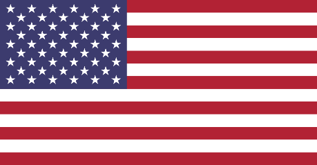
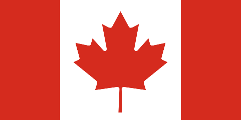

Establishing binational consistency regarding source water policies in the U.S. and Canada is paramount to achieve comprehensive protection of drinking water sources in the Great Lakes region. The symbols in the following table represent policy approaches taken by federal, state, and local governments in both nations toward three key source water protection components: Source water assessment, surface water intake protection, and wellhead protection. Comparing symbols in the table will allow you to assess the degree of consistency that exists in each nation across all levels of government. To make comparisons between a specific policy approach or level of government, use the row and column selectors to toggle on and off specific attributes. If you are interested in learning the reason a specific symbol was assigned, use the “click for more” more button to read details on the policy approach taken by a specific government unit. The following key will help you interpret each symbol:
|
|

U.S. |

Canada |
||||
|---|---|---|---|---|---|---|
| Issue | Federal | State | Local | Federal | Provincial | Local |
|
SOURCE WATER ASSESSMENT Consistency Grade: B+ Within all parties in the Great Lakes region, state/provincial and local governments have developed source water assessments for all drinking water sources. |
The 1996 amendments to the Safe Drinking Water Act require the EPA to develop Source Water Assessment Programs (SWAPs) for all public water supplies. These plans are developed regionally and are subject to EPA approval. EPA provides resources to assist states in developing their plans.
|
EPA delegates the responsibility to develop Source Water Assessment Programs (this link does not work) (SWAPs) to the state regulatory agencies, who work with municipalities and local governments to create the programs. State agencies then consult with EPA to gain approval for locally developed SWAPs. Links to information on SWAPs for each state can be found in the Blue Accounting Source Water Compendium.
|
Municipalities develop and carry out EPA-approved Source Water Assessment Programs (SWAPs) in conjunction with state and regional governments. As of 2002, SWAPs have been approved and completed for all public water systems in the United States. Information on how to obtain regional SWAP data is contained in the Consumer Confidence Reports for each region.
|
The Canada Water Act grants authority to the provinces to develop water resource protection plans, including source water assessment plans, though they are not required. The Minister of Environment and Climate Change may approve provincially developed plans. The Protocol for Centralized Drinking Water Systems in First Nations Communities does require First Nations to prepare assessments for on-reserve threats to raw water sources.
|
Ontario: The Ontario Clean Water Act requires source water assessments for all community water supplies as part of the Drinking Water Source Protection Program. Ontario has designated 19 regional committees to develop assessments, representing each major watershed in the province.
Quebec: The 2009 Quebec Water Act enhances the power of the province to implement source water programs, designating 40 water management zones . Each zone is required to complete a Water Master Plan that assesses threats to drinking water sources. |
Ontario: Representatives from local governments and municipalities make up regional source protection committees and work with the province to complete assessments. The 19 regional committees have developed 22 federally approved Source Water Protection Plans, which require assessment of threats to water quality.
Quebec: Representatives from Quebec’s 40 water management zones (OBVs) work with local governments and municipalities to develop Water Master Plans (PDEs). PDEs for all 40 regions can be obtained through the website of each OBV, accessible through the Quebec Watershed Organization website. |
|
SURFACE WATER PROTECTION Consistency Grade: C- Both countries have no federal requirement to develop protection plans for surface water sources. While Ontario requires surface water, protection plans for all municipalities, no U.S. states have similar requirements. Quebec has developed a draft strategy for a province-wide source water protection plan, but it has yet to be implemented. |
The U.S. EPA encourages local and state governments to use data from source water assessments to develop their own Source Water Protection Plans (SWPPs), though there is no requirement to do so. EPA provides resources, including possible federal funding sources, to state and local governments to help them develop SWPPs.
|
Several states encourage local governments to use data from source water assessments to develop their own Source Water Protection Plans (SWPPs), though there is no requirement to do so. Some states may provide resources or grants to communities interested in developing SWPPs. A state regulatory agency may choose to approve a locally-developed SWPP.
|
Several local governments have voluntarily developed their own Source Water Protection Plans (SWPPs), many of which have been approved by the state regulatory agency. The Blue Accounting Source Water Compendium contains information on which local governments in the Great Lakes region have SWPPs for surface water sources.
|
The Canada Water Act grants authority to the provinces to develop water resource protection plans, though they are not required. The Minister of Environment and Climate Change may approve provincially developed plans. The Protocol for Centralized Drinking Water Systems in First Nations Communities does require First Nations to prepare protection plans for on-reserve threats to raw water sources. |
Ontario: The Ontario Clean Water Act requires surface water protection plans for all community water supplies as part of the Drinking Water Source Protection Program. Ontario has designated 19 regional committees to develop plans, representing each major watershed in the province.
Quebec: Quebec has completed a draft strategy for protecting drinking water sources; however, this plan has yet to be implemented. Quebec’s 40 water management zones have developed a Water Action Plan as a component of their Water Master Plan, which outlines voluntary strategies each region will implement to protect surface water sources.
|
Ontario: Representatives from local governments and municipalities make up regional source protection committees and work with the province to design source water protection plans. The 19 regional committees have developed 22 federally approved plans, which include regionally-based policies to protect against specific contaminants.
Quebec: Water Action Plans developed by each of Quebec’s 40 water management zones outline strategies each region hopes to implement to protect surface water sources, but these actions are not enforceable by any specific policy at this time.
|
|
WELLHEAD PROTECTION Consistency Grade: C While the U.S. EPA requires all states to develop wellhead protection programs, these programs vary widely between states, and many are voluntary. In Canada, provincial and local groundwater protection programs are more robust, but there is no federal requirement for them to be developed. |
The 1986 Amendments to the Safe Drinking Water Act require each state to develop EPA-approved plans outlining procedures for delineating and monitoring the area surrounding a public water supply well, or “wellhead.” Although EPA requires every state to develop a wellhead protection program, regional participation may be voluntary under the plan and still receive EPA approval.
|
Wellhead protection plans for all public water supplies are required in Minnesota and Indiana. Wellhead protection plans in other Great Lakes states may be voluntary or may only apply to new wells. Some states may use pieces of the state administrative code to establish restrictions in the wellhead area, in lieu of mandatory protection plans.
|
All communities within states that require wellhead protection plans have developed them. States with voluntary programs have had varying degrees of participation from their communities, with participation often dependent on the availability of state resources and funds.
|
The Canada Water Act grants authority to the provinces to develop water resource protection plans, including wellhead protection plans, though they are not required. The Minister of Environment and Climate Change may approve provincially developed plans. The Protocol for Centralized Drinking Water Systems in First Nations Communities does require First Nations to prepare protection plans for on-reserve threats to raw water sources.
|
Ontario: The Ontario Clean Water Act requires wellhead protection plans for all community water supplies as part of the Drinking Water Source Protection Program. Ontario has designated 19 regional committees to develop plans, representing each major watershed in the province.
Quebec: Quebec has completed a draft strategy for protecting drinking water sources; however, this plan has yet to be implemented. Quebec’s 40 water management zones have developed a Water Action Plan as a component of their Water Master Plan, which outlines voluntary strategies each region will implement to protect groundwater sources. Currently, Quebec restricts land uses in the nearby and remote wellhead zones for all public supply wells.
|
Ontario: Representatives from local governments and municipalities make up regional source protection committees and work with the province to design source water protection plans. The 19 regional committees have developed 22 federally approved plans, which include regionally-based policies to protect against specific contaminants.
Quebec: Water Action Plans developed by each of Quebec’s 40 water management zones outline strategies each region hopes to implement to protect groundwater sources, but these actions are not enforceable by any specific policy at this time. However, local governments must enforce the wellhead area restrictions put in place by the province.
|